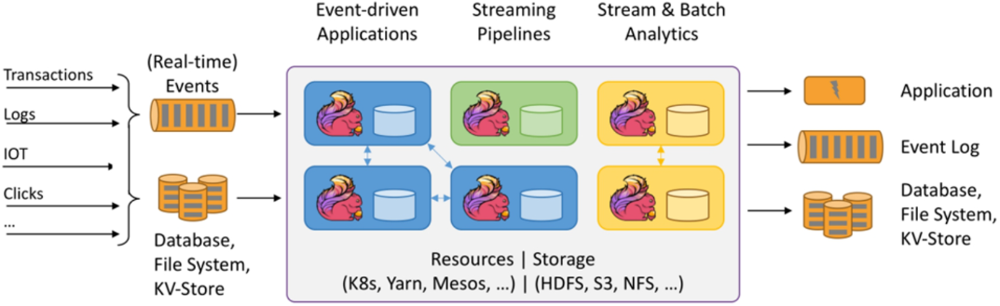

首页 > 编程笔记
Flink框架是什么？
根据官方（https://flink.apache.org）的说法，所谓的 Flink 是一个开源的大数据框架和分布式处理引擎，它由 Apache 软件基金会开源，用于在无界和有界流数据上进行有状态的计算。
从图中可以看出，Flink 应用架构一般由多个 Flink 计算节点构成集群，在资源调度方面可以基于 K8s（Kubernetes，简称 K8s）、Yarn 和 Mesos 等组件。在存储方面，可以支持 HDFS、S3 和 NFS 等文件系统。
在集群内部，不同节点可以进行数据交互，并可维护相关的状态数据，这样在计算过程中，如果发送异常，可以借助容错机制从中间状态进行数据恢复，这一点对于一个分布式应用程序来说至关重要。
Flink 框架将复杂的分布式计算框架进行抽象，内部复杂的调度、计算过程对用户来说是透明的，用户只需关注具体的计算逻辑即可。
如果将 Fink 应用集群看作是一个函数的话，它可以接收多种流数据输入作为参数，比如实时事件数据、传统数据库数据、文件系统数据以及键值对存储系统。这些各种类型的数据可以来自事务系统、日志、物联网设备以及网页点击流等。
另外，Fink 可以将处理后的数据，输出到第三方应用系统、事件日志、数据库系统、文件系统以及键值对存储系统中。
Flink 程序主要由 Java 语言或 Scala 语言开发，另外还支持 Python 语言。但其底层组件和 Flink 运行时（runtime）运行在 JVM 上，因此，Flink 程序可以运行在多种平台上，如 Linux、Unix、Mac OS X 和 Windows 操作系统上。
Flink 能在计算机内存中进行分布式数据处理，因此计算速度非常快，且计算的延迟低。
官方给出了 Flink 用户在生产环境下得出的一些让人惊叹的数据：
Flink 官方网站也给出了一些优点，具体罗列如下：
1) 适用于所有的流应用场景，如事件驱动应用、数据管道和 ETL 处理。
2) 高级别的计算正确性保证，支持精确的一次语义，保证数据只被消费一次且无遗漏，这个一般是非常难实现的。
另外，基于事件时间（Event time）和延迟机制可以处理延迟导致的乱序数据计算。
3) 大规模集群计算能力，支持水平横向扩展、大规模状态存储以及增量检查点机制。当计算能力不足时，可以通过增加计算节点来提升总体计算能力。
4) 应用运维成本低，支持多种部署模式，可以灵活部署。
另外，高可用机制可以最大程度保证服务的稳定性，即使某个节点宕机，也不影响其他节点对外提供服务。
卓越的计算性能。通过在内存中进行数据计算，实现高吞吐和低延迟的数据处理能力，这点对于实时处理程序来说非常重要。
5) 分层次的 API。
对于不同的开发用户而言，对 API 使用的偏好是不同的，Flink SQL API 可以基于 SQL 语法来实现对流批数据的一体化处理，这个也更加友好。
另外，还提供专门的 DataStream API 来处理流数据计算，DataSet API 来处理批数据计算。
对于上层不提供的功能，用户可以基于底层的 API 定制数据计算逻辑。
Flink 在国内外的众多大厂中被广泛使用，其中部分典型的用户（排名不分先后）如图2所示。
图2：Flink 部分典型的用户列表
可以说，这些大厂的业务复杂度和数据存有量都是世界级的，经过他们在生产环境下的实践检验，事实证明 Flink 确实是一款非常优秀的大数据分布式处理框架。其中：
一般来说，Flink 应用程序会运行在 Linux 操作集群上，而开发环境可以是 Windows 操作、Mac OS 操作系统或者 Linux 操作系统。其中 Deepin 操作系统则是国产的一款非常好用的 Linux 操作系统，界面也非常美观。
无界是指：有数据流的开始点，但没有数据流的结束点；有界是指：有数据流的开始点，且有数据流的结束点。
图1所示是官方网站首页的一幅图，用来说明 Flink 常见的应用架构。

图1：Flink 应用架构
图1：Flink 应用架构
从图中可以看出，Flink 应用架构一般由多个 Flink 计算节点构成集群，在资源调度方面可以基于 K8s（Kubernetes，简称 K8s）、Yarn 和 Mesos 等组件。在存储方面，可以支持 HDFS、S3 和 NFS 等文件系统。
在集群内部，不同节点可以进行数据交互，并可维护相关的状态数据，这样在计算过程中，如果发送异常，可以借助容错机制从中间状态进行数据恢复，这一点对于一个分布式应用程序来说至关重要。
Flink 框架将复杂的分布式计算框架进行抽象，内部复杂的调度、计算过程对用户来说是透明的，用户只需关注具体的计算逻辑即可。
如果将 Fink 应用集群看作是一个函数的话，它可以接收多种流数据输入作为参数，比如实时事件数据、传统数据库数据、文件系统数据以及键值对存储系统。这些各种类型的数据可以来自事务系统、日志、物联网设备以及网页点击流等。
另外，Fink 可以将处理后的数据，输出到第三方应用系统、事件日志、数据库系统、文件系统以及键值对存储系统中。
Flink 程序主要由 Java 语言或 Scala 语言开发，另外还支持 Python 语言。但其底层组件和 Flink 运行时（runtime）运行在 JVM 上，因此，Flink 程序可以运行在多种平台上，如 Linux、Unix、Mac OS X 和 Windows 操作系统上。
Flink 能在计算机内存中进行分布式数据处理，因此计算速度非常快，且计算的延迟低。
官方给出了 Flink 用户在生产环境下得出的一些让人惊叹的数据：
- Flink 应用每天可以处理数万亿的事件。
- Flink 应用可以维护 TB 级别的状态信息。
- Flink 应用可以在数千个内核上运行。
- Flink 应用具有高吞吐、低延迟的特性。
Flink 官方网站也给出了一些优点，具体罗列如下：
1) 适用于所有的流应用场景，如事件驱动应用、数据管道和 ETL 处理。
2) 高级别的计算正确性保证，支持精确的一次语义，保证数据只被消费一次且无遗漏，这个一般是非常难实现的。
另外，基于事件时间（Event time）和延迟机制可以处理延迟导致的乱序数据计算。
3) 大规模集群计算能力，支持水平横向扩展、大规模状态存储以及增量检查点机制。当计算能力不足时，可以通过增加计算节点来提升总体计算能力。
4) 应用运维成本低，支持多种部署模式，可以灵活部署。
另外，高可用机制可以最大程度保证服务的稳定性，即使某个节点宕机，也不影响其他节点对外提供服务。
卓越的计算性能。通过在内存中进行数据计算，实现高吞吐和低延迟的数据处理能力，这点对于实时处理程序来说非常重要。
5) 分层次的 API。
对于不同的开发用户而言，对 API 使用的偏好是不同的，Flink SQL API 可以基于 SQL 语法来实现对流批数据的一体化处理，这个也更加友好。
另外，还提供专门的 DataStream API 来处理流数据计算，DataSet API 来处理批数据计算。
对于上层不提供的功能，用户可以基于底层的 API 定制数据计算逻辑。
Flink 用户
Flink 目前在大数据技术栈中，占有非常重要的位置，特别在流数据处理领域，更是很多大厂的不二选择。在国内，阿里通过各种途径积极完善和推广 Flink 技术，并从源码层面做出了非常重要的贡献。Flink 在国内外的众多大厂中被广泛使用，其中部分典型的用户（排名不分先后）如图2所示。
图2：Flink 部分典型的用户列表
可以说，这些大厂的业务复杂度和数据存有量都是世界级的，经过他们在生产环境下的实践检验，事实证明 Flink 确实是一款非常优秀的大数据分布式处理框架。其中：
- 阿里巴巴用 Flink 来实现商品的实时搜索排名。
- Bouygues 公司的 30 多个 Flink 应用程序，每天处理约 100 亿个事件。
- Capital One 是一家财富 500 强金融服务公司，它用 Flink 进行实时的活动监控和预警服务。
- 滴滴出行用 Flink 实现了实时监控、实时特征抽取和实时 ETL 等业务，大大提升了产品的满意度。
- 华为基于 Flink 打造相关云服务。
- OPPO 公司用 Flink 构建实时数据仓库，用于实时数据分析，为提升营销活动效果相关决策服务。
一般来说，Flink 应用程序会运行在 Linux 操作集群上，而开发环境可以是 Windows 操作、Mac OS 操作系统或者 Linux 操作系统。其中 Deepin 操作系统则是国产的一款非常好用的 Linux 操作系统，界面也非常美观。
关注公众号「站长严长生」，在手机上阅读所有教程，随时随地都能学习。内含一款搜索神器，免费下载全网书籍和视频。

微信扫码关注公众号